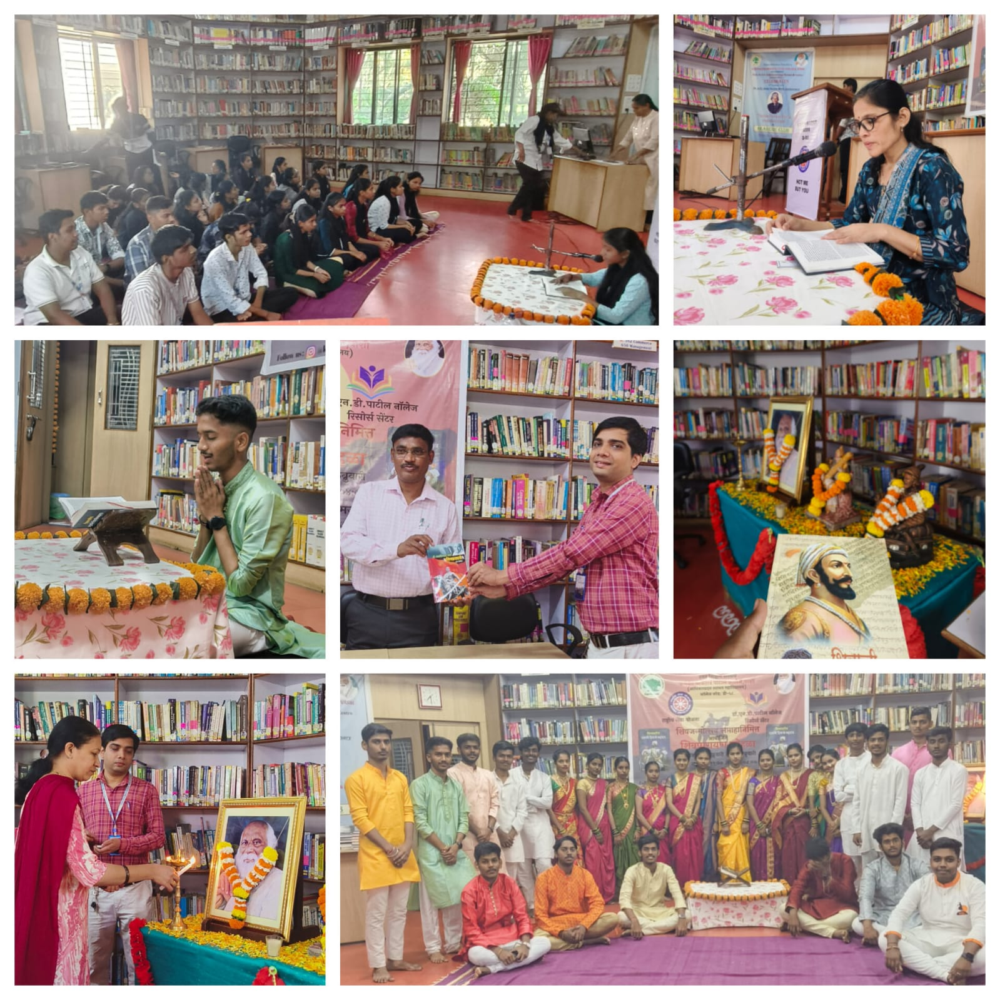
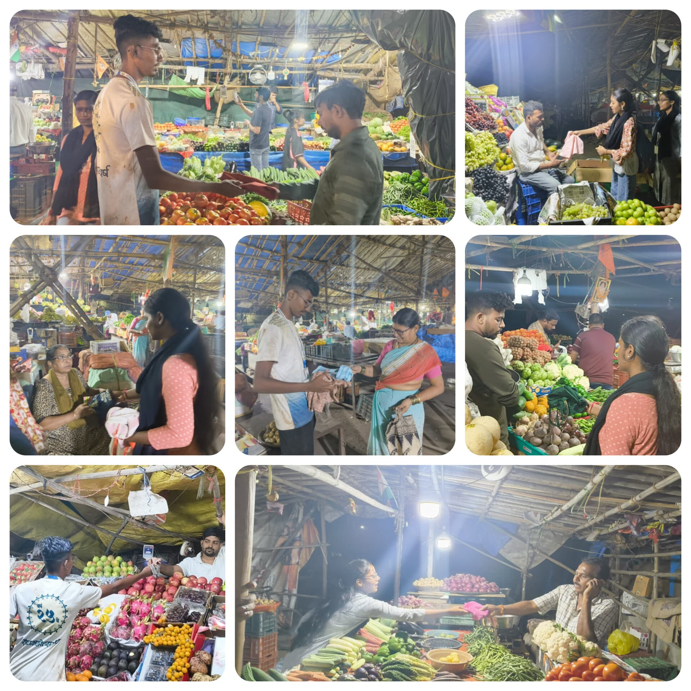
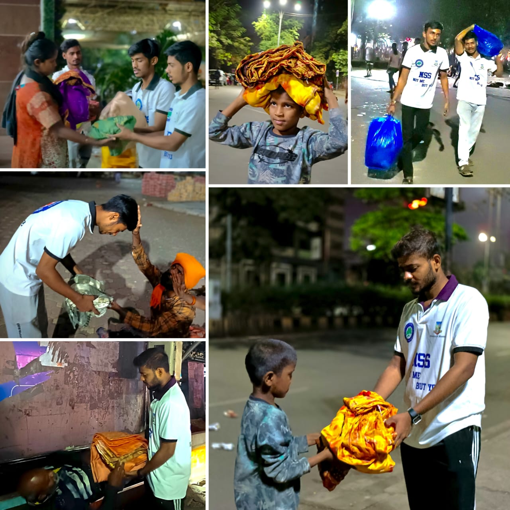
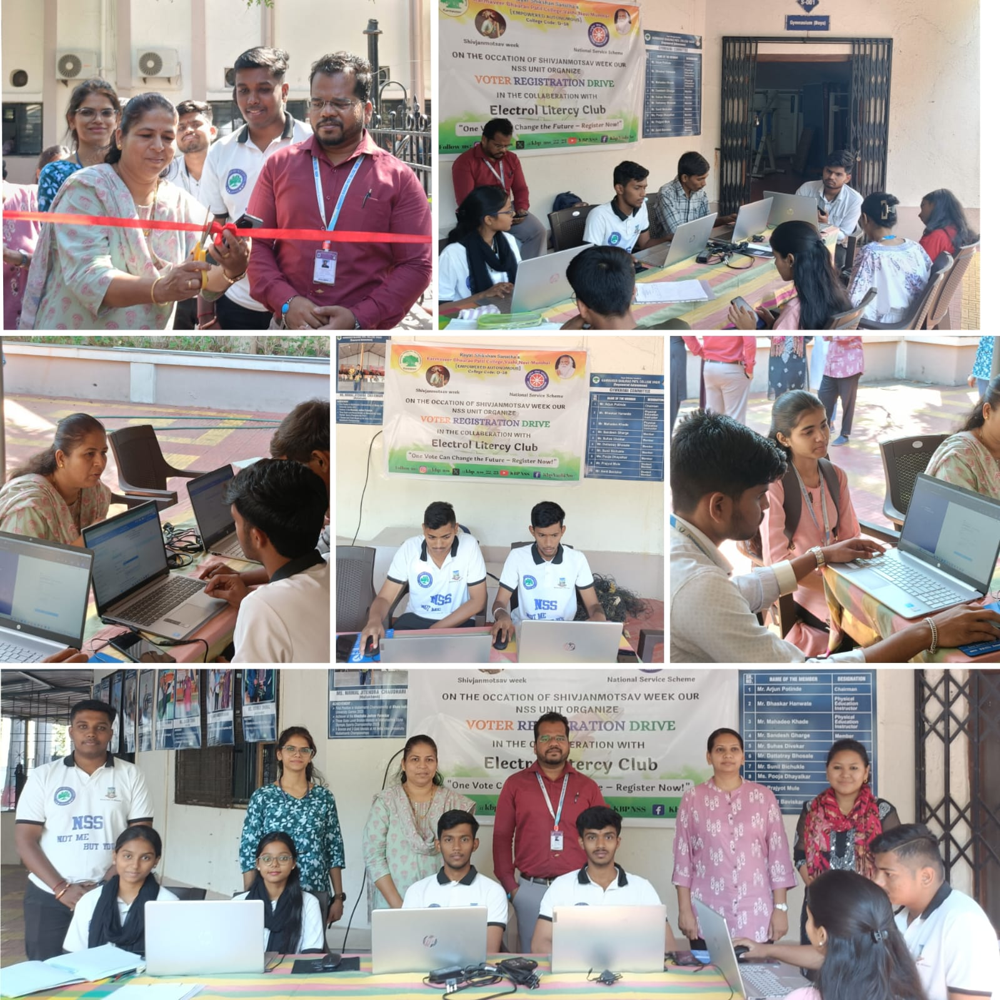

Rayat Shikshan Sanstha's
Karmaveer Bhaurao Patil College, Vashi
[ Empowered Autonomous ]
National Service Scheme
D-58
"Not Me But You"


Rayat Shikshan Sanstha's
[ Empowered Autonomous ]
D-58
"Not Me But You"
A grand week-long celebration inspired by the courage, leadership, sacrifice, and vision of Chhatrapati Shivaji Maharaj.
NSS Unit D-58 celebrated Shiv Jayanti with unmatched enthusiasm, discipline, cultural pride, and social responsibility.
The week included blood donation drives, heritage conservation, social initiatives, environmental awareness, and cultural programs.
Days Celebration
Volunteer Participation
Blood Bags Collected

As a part of the Shiv Jayanti celebration, NSS volunteers and students actively participated in Shiv Parayan conducted throughout the week. The activity focused on spreading awareness about the life, leadership, administration, discipline, and inspirational ideals of Chhatrapati Shivaji Maharaj.
Students gathered together daily to listen, read, and discuss important incidents from Maharaj’s life which motivated volunteers towards leadership, courage, patriotism, and social responsibility.

NSS Unit D-58 successfully organized a large-scale blood donation camp during the Shiv Jayanti celebration. Students, volunteers, teaching staff, and citizens enthusiastically participated in the initiative to support emergency healthcare services and save lives.
The camp created awareness regarding the importance of blood donation and encouraged youth participation in humanitarian activities.

Volunteers conducted a fort cleaning drive to promote cleanliness, environmental awareness, and preservation of historical heritage.
Through this activity, NSS volunteers spread awareness about protecting historical monuments and maintaining cleanliness at important heritage sites connected with the legacy of Chhatrapati Shivaji Maharaj.

NSS volunteers organized a cloth bag distribution campaign to spread awareness regarding the harmful effects of plastic usage.
Eco-friendly cloth bags were distributed among local citizens and shopkeepers encouraging people to adopt sustainable and environmentally responsible habits in their daily lives.

Under the initiative "Maayechi Ubb", volunteers stitched warm blankets using old sarees and reusable materials to help homeless and needy individuals.
The activity promoted kindness, compassion, recycling, and social responsibility among students while supporting underprivileged people during difficult conditions.

NSS volunteers conducted a voter registration drive to encourage youth participation in democracy and increase awareness regarding voting rights.
Students guided citizens regarding the voter registration process and highlighted the importance of responsible voting for the development of society and the nation.
NSS volunteers visited an old age home and spent quality time with elderly citizens through conversations, cultural interaction, and social engagement activities.
The visit aimed to spread happiness, emotional support, and care among senior citizens while teaching students the values of respect, empathy, and humanity.


Shiv Jayanti at NSS Unit D-58 stands as more than a cultural event. It inspires students to practice leadership, courage, discipline, unity, and service towards society. Through social initiatives, cultural performances, and volunteer participation, the celebration continues to leave a lasting impact across campus.